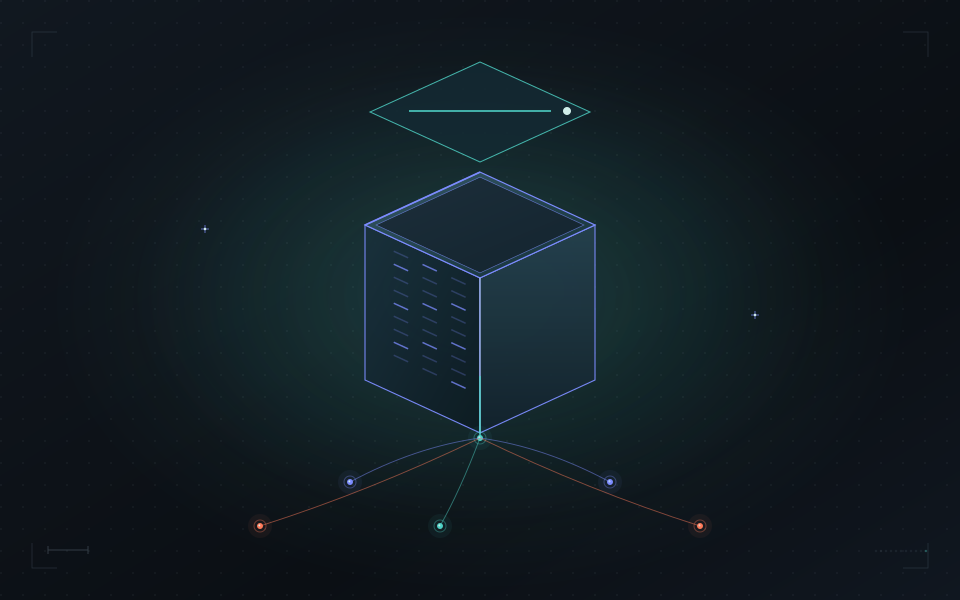

Why a shared name is the missing layer
Systems agree about geometry and disagree about identity. Here is the gap, and the fix.
IdentitySpatial computing
3 min read 
An address is a promise that a letter will arrive. It was designed for delivery to a building, by a person, once a day, and at that job it is close to perfect. Almost no operational work happens at that resolution. The valve, the riser, the bay, the window, the cabinet: these are what people and machines actually work on, and none of them has an address.
This is not a complaint about addressing. It is an observation about where one system's scope ends and another's begins, and about how much of the difficulty in spatial software comes from asking addresses to do a job they were never shaped for.
An address encodes a route for a human carrying something: country, locality, street, number, sometimes a unit. It is readable, it is memorable, it degrades gracefully, and it has survived for centuries because it is well matched to its purpose. It also has properties that are fine for delivery and awkward for machines. It is not unique, because units and suites are formatted inconsistently. It changes when a street is renamed or a building is subdivided. It is ambiguous at the edges, because a corner building may legitimately have two. And it stops, categorically, at the entrance.
Parcel identifiers improve on some of that. They are unique within a jurisdiction, they are authoritative, and they are stable until a subdivision. They describe land rather than things, which means they also stop at the ground.
Place identifiers from mapping systems improve again: global, stable, entity-based rather than coordinate-based, and designed for joining data. Overture's GERS is the strongest example, and it does precisely what it is scoped to do, which is give mapped entities a shared identifier so datasets can be joined without conflation. It is deliberately a reference map, and a reference map should not contain every valve in every building.
Each of these is good at a level. Stack them and there is still a floor, and the floor is roughly "the smallest thing somebody else also needs to refer to."
Consider an ordinary maintenance ticket: the pressure-reducing valve on the domestic water riser, fourth floor, north mechanical closet. Follow that sentence through the systems that have to act on it.
Five systems, five identifiers, one valve, and nothing connecting them except a person who knows all five. The building has an address, a parcel number, and probably a GERS ID. The valve has none of those, and the valve is what the work is about.
The standard response is an integration: map the maintenance system's tags to the model's GUIDs, then map the scan segments to the tags, then map the controller points to the model. Each mapping is reasonable in isolation. Collectively they are per-pair work that must be maintained forever, and they break on the next re-scan, the next model revision, and the next vendor change.
The alternative is to give the valve a persistent identity of its own and let each system attach its native identifier to it, once.
building 4did:id:5a89fc81f07739510a815e8c202160ac:4TNQ8W2KPJ6XR9B0MV3HZD
identified_as overture.gers / fea28f69-7afa-460c-b270-61ef74cd340c
identified_as city.parcel / 0427-118-006
floor 4 4did:id:5a89fc81f07739510a815e8c202160ac:9BMX3KD7QW40TPJ2R6NVHZ parent → building
closet 4did:id:5a89fc81f07739510a815e8c202160ac:2HVR6JQ8NX3BTKD9MW07PZ parent → floor 4
valve 4did:id:5a89fc81f07739510a815e8c202160ac:QJ7MXT04HB2NRK9VPD3W6Z parent → closet
identified_as acme.cmms / VLV-4N-02
identified_as bim.ifc / 3tP9kA1QrE4xZ7mNc0VbYs
identified_as bas.point / AHU4.DWR.PRV
The valve now has one name that all five systems can resolve, and each of them kept its own identifier. The maintenance system did not migrate. The model did not change. The controller point name is untouched. What changed is that there is a shared subject they can all point at, and the translation happens once at each edge instead of repeatedly between every pair.
Note what the hierarchy is doing and what it is not. The parent chain is physical containment: the valve is in the closet, the closet is on the floor, the floor is in the building. That is a tree, which is what makes it useful for walking down from an address to a component and for composing poses without republishing everything beneath a parent that moved. Everything else that might contain the valve, including its maintenance zone, its fire district, its leasehold, and its grid cell, is a registration rather than a parent. Those overlap, come from different authorities, and expire; a tree would be the wrong shape for them.
Addressing work precisely. A dispatch, an inspection result, a sensor reading, or a photograph can attach to the valve rather than to the building. The building's record stops being a bucket of loosely associated documents and becomes a structure where each fact sits on the thing it is about.
Continuity across captures. Next year's scan is a new capture, and the segmentation that finds a valve in it is a new observation. If an upstream correspondence process establishes that this cluster is that valve, the observation attaches to the existing identity and the valve's record gains a second data point instead of the archive gaining a second disconnected delivery. The correspondence is real spatial work done by other systems. The identity layer stores the result and who stands behind it.
Reference that survives rephrasing. "The PRV on the fourth-floor domestic riser" and "VLV-4N-02" and a point in a scan viewer are three ways of describing one subject. Once they resolve to one identity, a request expressed in any of them can be acted on by a system that only understands another. That is also what makes the natural-language case tractable: the hard part is not parsing the sentence, it is having something stable for the parsed result to point at.
Naming is not locating. Giving the valve a persistent identity says nothing about where it is in any particular robot's map, and does not help a technician find the closet. Localization, navigation, and registration remain the responsibility of the systems that do them.
Nor does a name decide correspondence. Whether this cluster in this scan is that valve is a judgment made from evidence by a matching process, and sometimes by a person. The identity layer records the candidate, the evidence, the decision, and the authority behind it. Being able to reverse that decision later, with the reversal itself recorded, matters more than being able to make it automatically.
And granularity is a choice with a cost. Not every bolt needs a name. The useful test is whether more than one system needs to refer to the thing independently. If only one system ever touches it, its own identifier is sufficient and a shared one is overhead. The valve passes that test, because five systems already refer to it and currently cannot agree that they are doing so.
Addresses, parcels, and place identifiers are the right names for the mapped world, and the work to make them stable and joinable has been enormously valuable. What they intentionally do not cover is the operational layer: the components, equipment, temporary zones, and capture-specific anchors that the actual work addresses, and that change faster than any map release.
Giving those things persistent identity is not an alternative to addressing. It is the layer below it, and it is where most of the difficulty, and most of the value, has been sitting unaddressed. You can see both forms of the identifier, and what their structure does and does not tell you, in the identity inspector.